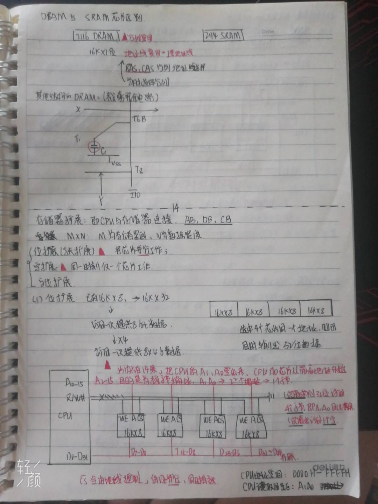
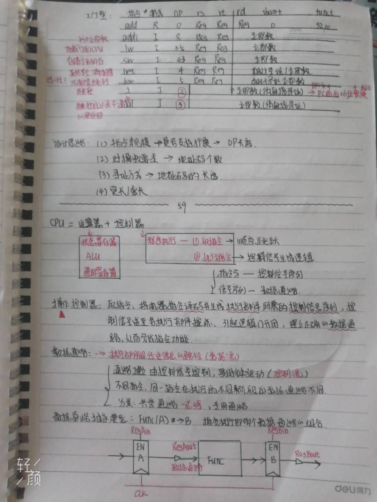
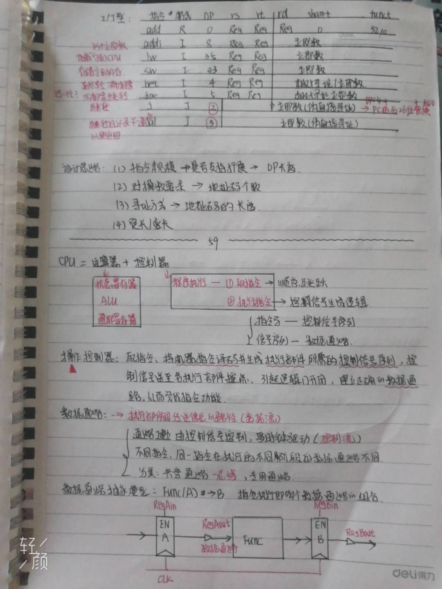
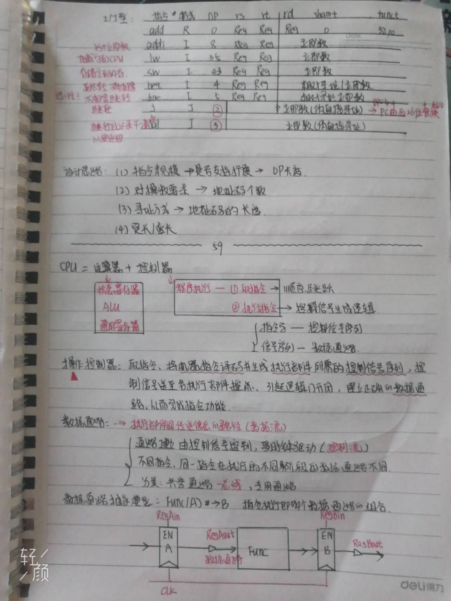
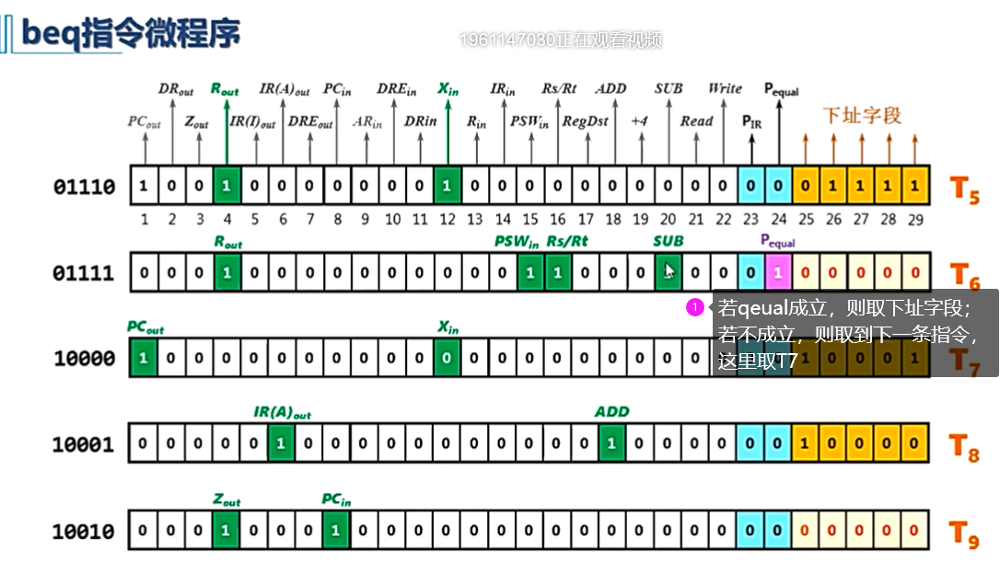

计算机组成原理



 

指令周期基本概念
指令周期、机器周期、时钟周期的关系与各自的概念。
以下图，按照机器周期进行同步。
早期时序系统：指令按照节拍执行。
生成信号控制的逻辑表达式。
控制器
时序产生器；
（1）同步控制的机器周期数固定。
（2）异步控制机器周期数不一样。
MIPS5个常见指令周期
- lw rt, imm(rs) 将内存中地址为imm+rs的数，加载出来，放入rt寄存器中。
取指令过程忽略。
公式：Mem[R[rs]+imm]->R[rt]

--------------------------------------------------------62--------------------------------------------------
- sw rt, imm(rs) 将tr寄存器中的数，存储到，内存中的地址imm+rs。
取指令过程忽略。
公式：R[rt]->Mem[R[rs]+imm]
- beq rs, rt, imm 当rs=rt时，将PC的值通过imm改变（即跳转）。
取指令过程忽略。
公式：
若PSW的状态不相等，则不执行T9。
- add rd, rs, st 将rs+rt，存入寄存器rd中。
取指令过程忽略。
公式：R[rs]+R[rt]->R[rd]
- addi rt, rs, imm 将rs和立即数imm相加，存入寄存器rd中。
取指令过程忽略。
公式：R[rs]+imm->R[rt]
以下是MIPS结构：
从内存中取指令的数据通路建立过程：每条指令都会经过这个过程。

指令周期方框图（数据流）
硬布线控制器设计
*控制器：控制指令自动执行。
三级时序硬布线控制器设计：
设计顺序：（2）（1）（3）（4）（5）（6）
- 设计出指令流程。
- 指令周期设计
- 定长指令周期：3*4T
机器周期=3，表示3个阶段（取指令周期、计算周期、执行周期）。
节拍数=4，即取指令周期需要的节拍数。
输入：节拍脉冲，驱动其他脉冲的实现。
输出：Mif、 Mcal、 Mex、T1、T2、T3
- 变长指令周期
- 时序发生器设计
- 定长指令周期
- 变长指令周期
需要结合指令类型，来确定需要哪些状态。
- 产生控制信号的设计
Lw等信号，由指令译码器产生。
M、T等信号，由时序电路产生。

--------------------------------------------------------65--------------------------------------------------
现代时序布线控制器设计：
将需要M和T组合来确定的控制信号，使用S状态码表示。
根据分析获得指令状态转换图->状态转换表。
微程序控制器设计
微指令
微程序：使用软件思想设计硬件
程序、微程序、指令、微指令之间的关系：
微程序如何执行？存放？
取指令微程序：
lw指令微程序：
省略取指令部分，注意取指令微程序的最后一个指令在00011的位置，因此lw的第一个指令应该在00100。
sw指令微程序省略。

add指令微程序省略。
微指令编码方法
- 直接表示法，29位
解决方案：去掉互斥位、去掉下址字段。
- 编码表示法，24位
- 混合表示法
--------------------------------------------------------66--------------------------------------------------
去掉下址字段，微指令地址形成方法
若判别字段为00，则uPC=uPC+1；
若判别字段不为00，则需要使用地址转移逻辑。
- 下址字段法
在判别字段中增加了一位是否到指令结尾的判别位。

输入输出原理
IO系统组成：外部设备（键盘、鼠标等）+接口部件+总线+对应的管理软件（驱动软件）
IO系统作用：
- 完成计算机内部二进制与外部多种信息形式的交流。
- 保证CPU可以选择正确的IO部件和方式。
- 实现主机外设的速度匹配。
输入输出过程
- 输入<==
- CPU将设备地址放到总线，选择设备。
- CPU等待输入设备有效。
- CPU从数据总线读入数据。
- 输出==>
- CPU将设备地址放到总线，选择设备。
- CPU把数据放到数据总线上。
- 输出设备认为数据有效，取走数据。
信息交换方式
- 反复查询设备状态，直到设备准备好。
- CPU串行执行，效率比较低。
- 中断的概念：CPU暂时中断现在程序执行，去执行某个随即服务，处理完后恢复现在程序执行。
- 实质和特点：
- 分类
直接内存访问DMA方式
*准备阶段和结束阶段需要占用CPU。
*传输阶段DMAC从CPU接管总线，直接在内存和设备间进行传输。
通道方式
*代替CPU进行准备阶段（数据传送方向、内存地址、数据长度发给DMA）和结束阶段（向CPU发起中断请求，表示IO结束）。
*传输阶段DMAC从通道接管总线，直接在内存和设备间进行传输。
--------------------------------------------------------69--------------------------------------------------
中断响应流程
中断的优先级
*同时有中断请求，优先级高的先响应，优先级低的后响应。
*CPU优先级会随中断服务器改变，与该中断设备优先级一样。
单级中断和多级中断
- 单级中断：
优先级一样，离CPU近的会优先响应。
CPU处理某个中断时，不会被其他中断打断。
- 多级中断
优先级高的中断可以打断优先级低的。
形成中断嵌套，将断点地址存入堆栈。
优先级实现——中断仲裁
- 独立请求方式
每个设备都和CPU有确定的引脚连接，因此设备直接发起请求即可获得许可。
- 链式查询方式——公共请求线
只有一个总的请求和许可引脚，设备发起中断请求（请求中包含设备编码），CPU为对应的设备编码生成中断许可。中断许可从第一个设备开始传递，直到匹配到正确的设备。
- 分组链式——二维结构
--------------------------------------------------------70--------------------------------------------------
中断屏蔽
- 响应优先级：硬件设计好后就固定了。
- 处理优先级：使用屏蔽技术，可以改变处理优先级；若不使用屏蔽技术，则处理优先级=响应优先级。
中断屏蔽方式：
只能处理可屏蔽中断，不可屏蔽中断直接连接到CPU。
屏蔽码：
即图中的INM的编码。
中断识别：（寻找地址入口）
--------------------------------------------------------71--------------------------------------------------
中断响应条件：
DMA与通道
*DMA
DMA和外设的连接方式：
- 单通道MDA控制器
- 选择型MDA控制器
DMA控制器工作状态
- 被动状态——受控器：没有取得总线控制权，受CPU控制，相当于一个外设。
- 主动状态——主控器：接管总线控制权，取代CPU成为主控者。
内存争用：CPU和DMA同时都需要访问内存
- 停止CPU使用主内存
CPU仅暂停取数据的步骤，其他步骤可以继续执行

- DMA和CPU交替使用
- 周期挪用法，又称周期窃取（比如在取值周期插入wait），优先DMA访问

一个数据块的传送过程
DMA主要操作过程
准备阶段+传送阶段+结束阶段
（1）准备阶段：CPU将以下参数传给DMA
- 数据传送方向
- 数据块在主存的首地址
- 数据在外设的地址
- 数据的传送量
（2）传送阶段：DMA是连续传送一个数据块
（3）结束阶段：向主机发起中断请求，CPU执行中断服务
- 正常结束，数据块传输完毕
- 非正常结束，DMA故障
DMA与中断的区别